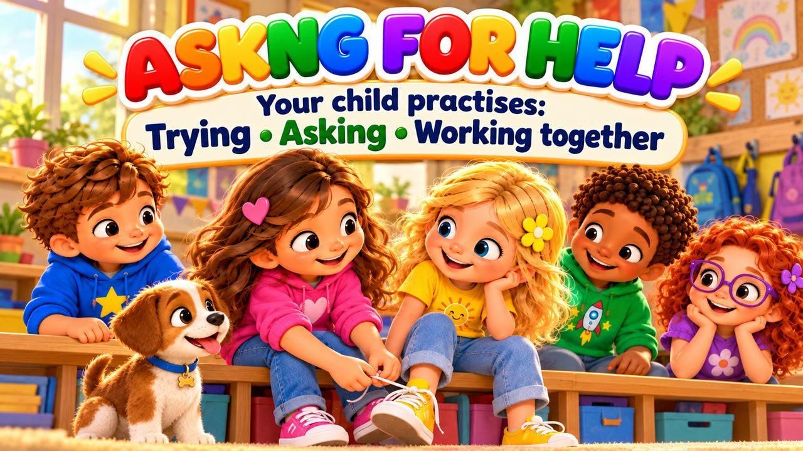

It's Okay to Ask for Help
A song about asking for help! 🙋 Sing along with Max, Mia, Jay, Lily, Rosie and Buddy the puppy as they learn to try first, take a breath, use their words — and ask for help when they're stuck.
"It's Okay to Ask for Help!" is a sing-along song for kids about asking for help. Lily's shoelace keeps coming loose, Jay can't move a big box on his own, and Rosie doesn't understand her schoolwork — so they ask a friend, a grown-up or the teacher, and learn something new. With karaoke lyrics on screen, it's perfect for preschool, kindergarten and early elementary kids (ages 3–8), at home or in the classroom.

▶💡 Why this skill matters: asking for help
Asking for help is not giving up — it is a smart and brave way to learn. Children who can ask for help get stuck less, feel less frustrated and learn faster. Show that it’s normal by asking for help yourself sometimes, and encourage “try first, then ask” with a warm “Of course I’ll help you.”
👨👩👧 What your child learns
- Trying first, then asking when stuck
- Calm, kind words: "Can you help me, please?"
- It's okay not to know everything
- Asking a friend, a teacher or a trusted grown-up
- Asking for help means learning, not giving up
💬 Talk about it after the song
- When did someone help you learn something new?
- Who can you ask when something is tricky?
🏅 Quiz & Certificate
Watched the song together? Now read each question aloud — your child points to the right picture. Answer all 6 questions and your child earns a printable certificate!
🔒 The name is only used to draw the certificate on your device. We don't save or send anything.
You did it! 🎉
All 6 answers are right! Type your child's name to make the certificate.
🖨️ Free printables
Free for home and classroom use. Print on A4 or Letter paper.
🖼️ Scenes from the song


🎵 More songs


🎤 Lyrics – It's Okay to Ask for Help
Hmm...
I tried it once.
I tried again.
But this is tricky!
What can I do?
I can take a breath...
Use my words...
And ask for help!
Lily tried to tie her shoe,
Loop and pull —
but it came loose!
She tried again,
then one more time.
"Why can't I
get this right?"
She started feeling
a little upset,
Then she stopped
and took a breath.
She looked at Max
and calmly said:
"Can you show me
how to do this?"
Max smiled:
"Sure! Watch me."
Loop...
around...
and pull it through!
Lily tried it
one more time...
"Hey!
I did it too!"
I can try
before I ask.
I don't have to
know it all.
If I'm stuck
and need a hand...
I can ask!
That's a good plan!
It's okay to ask for help!
It's okay to say:
"Can you show me?"
"Can you help me?"
"I need some help today!"
Try it first!
Take your time!
And if you're stuck,
that's totally fine!
Ask a friend!
Ask a grown-up!
You don't have to
do it all alone!
It's okay!
It's okay!
It's okay to ask for help!
Jay had a box
that was big and wide.
He tried to lift it
from one side.
He pulled it once,
he pushed it twice...
But moving it
wasn't going right.
He could keep struggling
all alone...
Or ask someone
to help him move it.
"Mia, could you
help me, please?"
"Of course!
We'll carry it together!"
One on this side,
one on that...
Step by step
across the room!
Something that was
hard alone...
Was much easier
for two!
I can try
before I ask.
I don't have to
know it all.
If I'm stuck
and need a hand...
I can ask!
That's a good plan!
It's okay to ask for help!
It's okay to say:
"Can you show me?"
"Can you help me?"
"I need some help today!"
Try it first!
Take your time!
And if you're stuck,
that's totally fine!
Ask a friend!
Ask a grown-up!
You don't have to
do it all alone!
It's okay!
It's okay!
It's okay to ask for help!
Rosie looked
at her schoolwork page.
One little part
didn't make much sense.
She looked again,
she tried to think...
But still she didn't understand.
For just a moment
she felt shy:
"What if everyone else
already knows?"
Then she raised her hand
and said:
"Could you explain
that part again?"
The teacher smiled
and showed the way.
Rosie listened carefully.
"Oh!
Now I understand!"
Asking helped her learn that day!
Something is tricky?
TRY FIRST!
Still stuck?
ASK FOR HELP!
Don't understand?
ASK A QUESTION!
Something too heavy?
FIND SOME HELP!
Feeling shy?
TAKE A BREATH!
What can you say?
"CAN YOU HELP ME, PLEASE?"
Does asking mean I can't do it?
NO!
What does it mean?
I'M LEARNING!
Asking for help
doesn't mean
I have to give up.
It doesn't mean
someone does everything for me.
I can try.
I can ask.
I can watch.
I can learn.
And then...
I can try again!
It's okay to ask for help!
It's okay to say:
"Can you show me?"
"Can you help me?"
"I don't understand today!"
I can try!
I can ask!
I can learn
a brand-new task!
Ask a friend!
Ask a teacher!
Ask a grown-up that I trust!
I don't have to
know it all...
That's how everybody
learns and grows!
Try!
Ask!
Learn!
Try again!
It's okay!
It's okay!
IT'S OKAY TO ASK FOR HELP!
First I'll try...
Then if I'm stuck...
I'll take a breath
and use my words.
"Can you help me, please?"
Asking for help...
helps me learn!